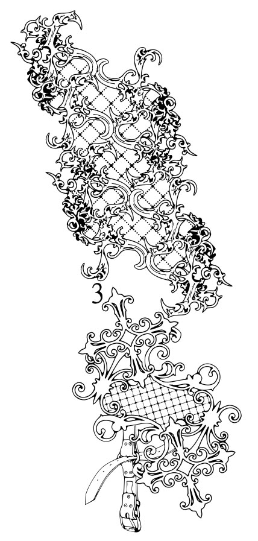
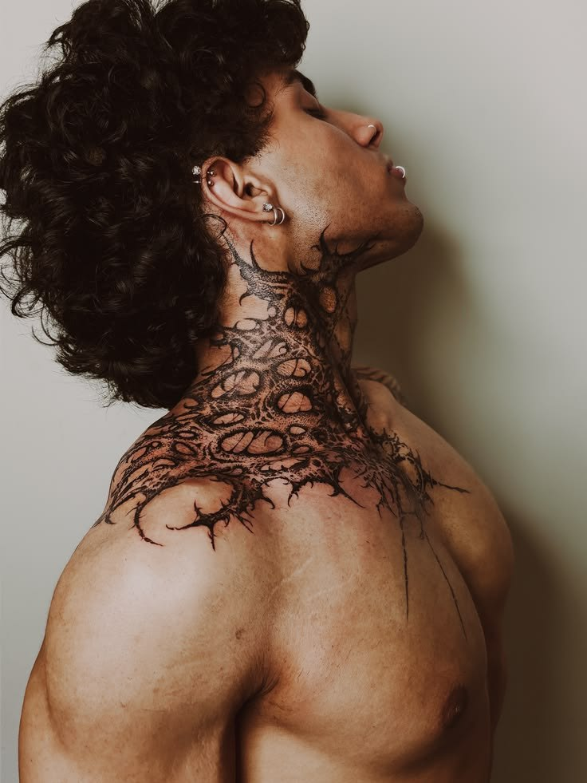
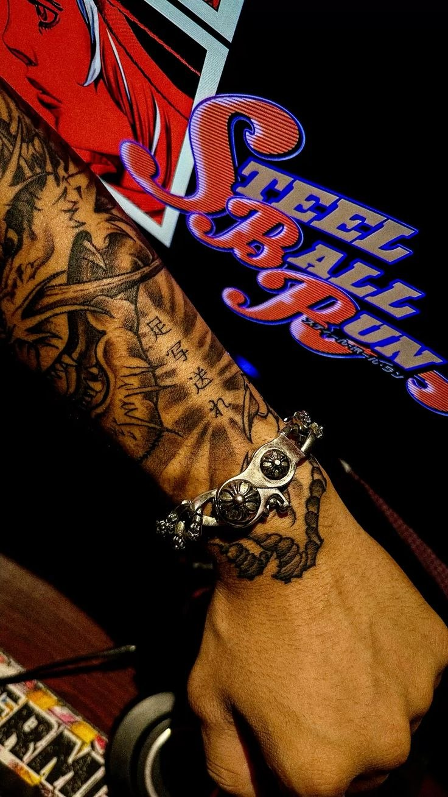

01 / MUSIC VIDEO & VISUALS
BEHIND / IN / AFTER.

Behind the frameMusic video / Set

On cameraModelling

Final atmosphereColour / Visual treatment
MY CONTRIBUTION
THREE SIDES
OF THE FRAME.
Across music-video projects, I've worked as a model, contributed to visual direction and colour-graded footage. These roles are connected by an interest in how a visual idea moves from concept and performance into its final image.
Credits and project titles can be added individually as the final portfolio details are confirmed.
02 / TATTOO & VISUAL ART
INK / LINE / FORM.

Ornamental studyDesign exploration

Organic lineworkVisual study

Lettering & symbolismTattoo practice
Tattooing is presented here as a personal hobby and creative practice, not as a claim of professional studio certification.